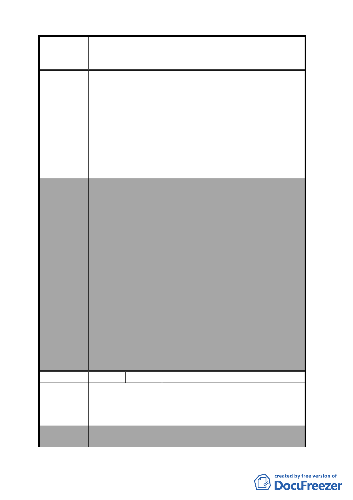

案名
建議辦法
委員會
決議
編號
陳情理由
建議辦法
委員會
決議
擬定臺北市南港區中南段 2 小段 302-1 地號等機關用地
（供國家生技研究園區使用）及中南段 1 小段 628 地號
等機關用地（供中央研究院及國防部使用）細部計畫案
居民休憩之場所。市政府將幹道出口置於民眾所
居住之巷內，將擾亂並危及居民和孩童之生活。
第三，四分溪和旁邊之山林，為各類鳥禽棲息所，更是
中研里好山好水之重要屏障，一旦將隧道口置於
12 巷底，四分溪旁之巷道將成為汽機車往來之孔
道，帶來嚴重之污染與破壞。
我們堅決反對市政府在研究院路 2 段 12 巷底設置
隧道出口。另外，基於環保的理由，中研社區協進會建
議未來隧道內，應設置雙向自行車專用道，鼓勵民眾騎
車至南港車站搭乘捷運，減少汽機車的使用。
本案依市府本次所送修正計畫書內容通過；對於基
地交通規劃及停車空間，增列以下 2 點規定：
（1）北側機關用地範圍內交通動線銜接興中路及研究
院路方向之路段，應開放供公眾通行，並由用地
單位負責開闢及管理維護。其中東側應連接四分
溪北側防汛道路及勤力橋，以銜接研究院路。
（2）上開路段涉及隧道及平面路段之設計，應符合以
下原則，以配合兩側交通系統，各路段設計並應
符合市區道路工程設計規範：
A.隧道部分：單向隧道斷面淨寬 10.5 公尺（配置
0.5 公尺維修通道、2 車道各 3 公尺、
機車專用道 2 公尺、人行暨自行車道
2 公尺）。
B.平面路段： 路寬 23 公尺，配置雙向各 2 車道 7
公尺，路側配置人行道暨自行車道共
4.5 公尺。其中連接至四分溪北側防
汛道路之路段，配置雙向各 1 車道及
人行道。
2 陳情人 張惠美
中研里 12 巷道路周邊均為住宅社區，無法忍受施工期
間工程車通行。且該巷兩旁已停車，大車通行有困難。
請另開闢一條道路，供施工期間通行（如隧道先通再動
工）。
1.本項有關施工期間車輛行駛路線，非屬都市計畫範疇。
2.申請單位本次會議所提資料說明，將評估以防汛道路
-5-